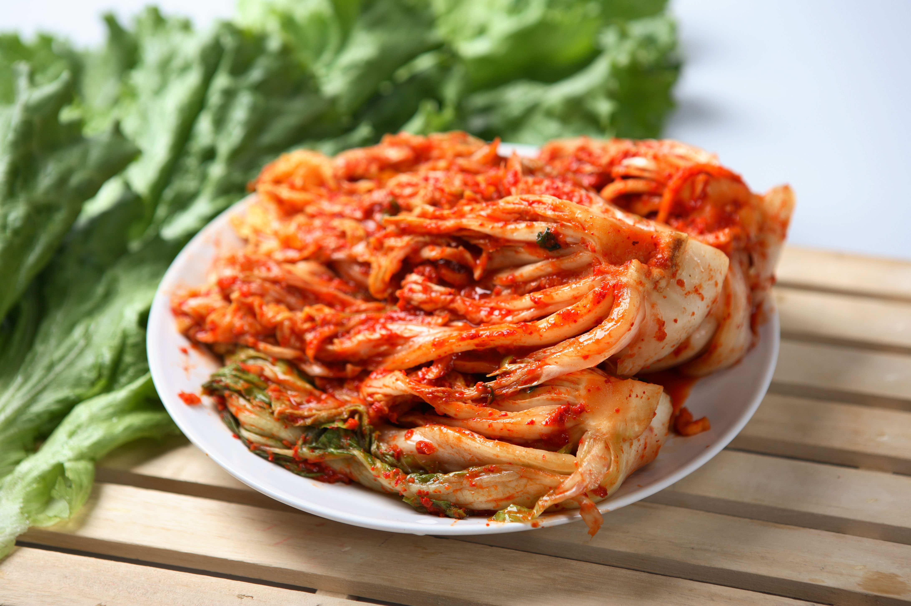
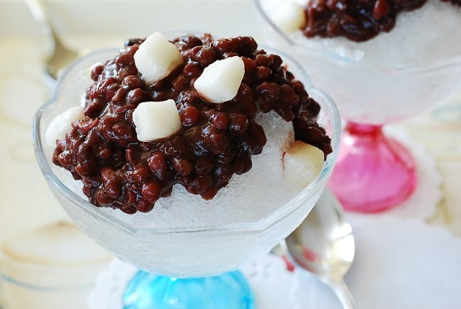

전채 — Entradas
Kimchi (김치)
Col fermentada picante, alimento esencial en la mesa coreana. Acompaña cualquier comida.
Mandu (만두) — Empanaditas
Empanadillas rellenas (al vapor o fritas), servidas con salsa de soya y vinagre.
Tteokbokki (떡볶이)
Pasteles de arroz en salsa picante y dulce; típico de comida callejera.

메인 — Plato Fuerte
Bibimbap (비빔밥)
Arroz con verduras, huevo y gochujang; se mezcla en mesa para equilibrar sabores.
Bulgogi (불고기)
Tiras de carne marinada y asada; presenta un sabor dulce-salado característico.
Jjigae (찌개) — Estofado
Estofado caliente (doenjang, kimchi o tofu) ideal para compartir y acompañar con arroz.

후식 — Postres
Patbingsu (팥빙수)
Hielo raspado con leche, frutas y pasta de frijol rojo; refrescante y dulce.
Hotteok (호떡)
Pancakes rellenos de azúcar y nueces; fritos y crujientes por fuera.